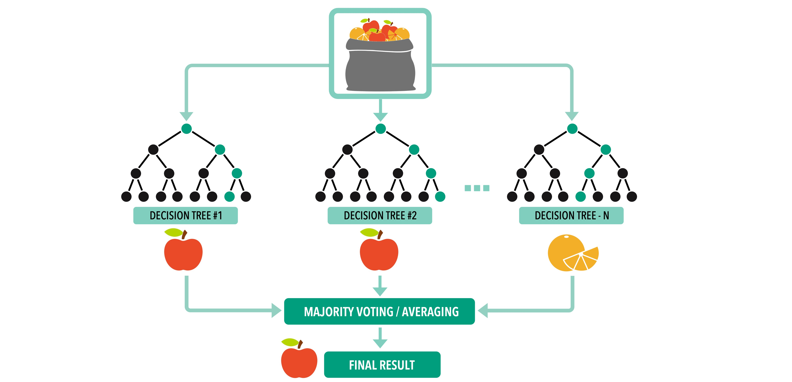

7 Predictive Phylogeography
THIS PAGE IS UNDER CONSTRUCTION
Generally, and historically, phylogeography has been defined as the study of the spatial distribution of genetic lineages of species. This field in evolutionary biology has more recently evolved to identify specific events that have affected the spatial history of species, and has expanded from species-based studies to community and comparative approaches.
Phylogeography is the study of the spatial distribution of genetic lineages of species. Figure made by Danielle J. Parsons.
Community and comparative phylogeography seeks to understand the extent to which environmental changes have affected whole communities of organisms. For instance, this field seeks to ask whether species that share ecological characteristics are likely to respond similarly to specific changes in the environment in which they co-occur (e.g., temperature shifts, the arrival of new species to the community, geological events). Indeed, this is something that has been identified in several systems, in particular those involving strongly spatially restricted species such as those occurring in isolated ecosystems, or species that are involved in very specialized interactions such as one-to-one pollination systems. If it is possible to find specific shared spatial histories for species that co-occur or that are tightly associated, it follows that there are some rules “guiding” whether species share spatial histories or not. If we can identify the nature of those rules, then we can use them to predict what species will share histories usign data related to the rules, and even in the absence of information about their histories. This is exactly what the field of predictive phylogeography seeks to do: identify general ecological and/or environmental traits shared by species that display similar spatial histories, and use those traits to predict the spatial genetic characteristics of species that are yet unstudied.
7.0.1 Trait data and response variables
In order to do this, predictive phylogeography uses, on the one hand, traits associated with the ecology or biology of the species in question. This data will be used to seek to identify those “rules” that drive the spatial genetic characteristics of the studied taxa. On the other hand, once the rules have been identified, they are applied to new unstudied taxa, for which the ecological and biological data is present, but the genetic data is absent. The application of these rules on new unstudied species allow to make predictions about their phylogeographic traits. If we think about this from a model perspective, we see that we have trait (explanatory) and response variables that are used to create a model, measure its accuracy, and then use it to make predictions. What are then these variables?
Trait (explanatory) data: the trait data in these approaches is often environmental, biological, and/or ecological. Environmental data can be represented by climatic, soil, or geologic data. Biological data can refer to characteristics intrinsic to the organisms of study. For example, dispersal ability, mating type, taxonomic group, brood size, habit, etc. Finally, ecological data may be associated to information related to interactions the organisms are involved in, their trophic level, etc.
Response variables: the variables used as response ones have been different in different studies, but they often involved some measure of genetic characteristics of the taxa in question. For instance, presence of specific levels of genetic divergence within the taxon, measures of genetic isolation across the landscape, amounts of genetic diversity, number of genetic clusters.
7.1 Machine learning and random forest
Machine learning methods are a family of methods in which an algorithm (a sort of mathematical model) is created to explore characteristics of a dataset. How does it do this? Let’s use a simple example. Imagine that we have a mixed bag of apples and oranges, and we would like to create a method that would tell us every time that we take a fruit out of that bag, what that fruit is. Machine learning methods can help us in this task. Apples are indeed different from oranges; they have different textures, shapes, flavors… A machine learning approach of doing this is to go to the store and get a lot of apples and oranges. For each apple and each orange, we can then collect data on all those characteristics that are intrinsic to apples and oranges, and we would end up with a table that would look like this:
| Fruit | Texture | Shape | Flavor | Color |
|---|---|---|---|---|
| Orange | Rugose | Spherical | Citrus | Orange |
| Apple | Slick | Conical | Sweet | Red |
| Apple | Slick | Conical | Sweet | Green |
| Orange | Rugose | Spherical | Citrus | Orange |
| Apple | Slick | Spherical | Sweet | Red |
| Orange | Rugose | Spherical | Citrus | Orange |
| Orange | Rugose | Spherical | Citrus | Orange |
| Apple | Slick | Conical | Sweet | Yellow |
| Orange | Rugose | Spherical | Citrus | Orange |
| Orange | Rugose | Spherical | Citrus | Yellow |
| Apple | Slick | Spherical | Sweet | Red |
| Apple | Slick | Conical | Sweet | Green |
After creating this table, we can give this to the algorithm, which will try to look at the dataset and analyze its characteristics, so as to identify some of the general features that differentiate apples from oranges. After testing different configurations, the algorithm will (hopefully) identify a combination of traits that differentiate the two fruits. The identification of these features by the algorithm is what is referred to as “learning”, since the method allows the algorithm to “learn” something about the structure of the dataset. Now that the algorithm has “learned” how to differentiate apples from oranges, we can expose it to a fruit that comes out of our mixed bag of apples and oranges, measure the traits of that fruit, run them through the algorithm and the algorithm will tell us what that fruit may be. Although this is a very silly example, this is the general way in which these methods work. Today, these types of methods are widely used in many aspects of our everyday lives: face recognition (e.g., biometric data associated with your IDs), prediction of interests based on past behavior on social media (e.g., the more you use your phone to navigate on the internet, the more ads appear to be targeting you individually), etc.
Among the many types of machine learning methods, we will talk about one called ‚Äúrandom forest‚Äù. Random forest is a method that uses descriptor data of a dataset to create a classifier that can be then used to predict the identity of new objects. Basically, the method uses a dataset where all characteristics of a set of identified objects are known (this is called the ‚Äútraining data‚Äù) to ‚Äúlearn‚Äù about the traits and patterns of the data. The specific way that random forest uses to do this is creating a set of classification trees. These are bifurcating trees, where a condition is applied to each node (e.g., in the case of our apples and oranges, a node could ask ‚Äúis the texture Rugose or Slick?‚Äù), which, when all conditions are used leads to a final classification of all objects. We say that this method is a random forest because i) it creates many trees (= a forest üòä), and ii) each tree is create with a subset of our training data that has been selected at random and they are added to tree in a random order. After the method creates a random forest, it can be exposed to new unknown objects. The traits associated to these objects will be run through all the trees that form the forest, and the prediction of each tree will be counted. The final prediction will be done based on the majority vote of all these trees. For example, and going back to our apples and oranges case, if we had constructed 100 trees, and a new unknown fruit was predicted by 80 trees to be an apple, and by 20 to be an orange, we would say that our random forest predicts the fruit as an apple with an 80% (80/100) chance.

A random forest predictive model, as applied to the apples and oranges example described above. Figure made by Danielle J. Parsons.